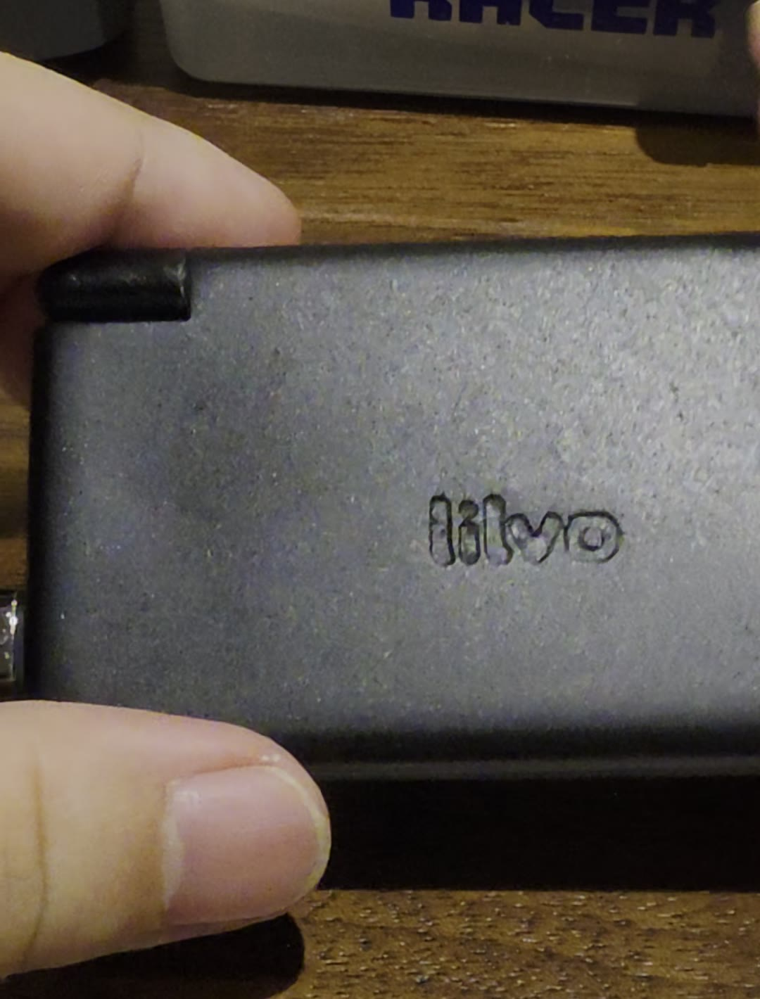

The second prototype, assembled
The new main board hasn't arrived yet, but almost everything around it has: a new shell, a new hinge cable, a new speaker and a new small board in the lid. I couldn't wait, so I built a second prototype around the board I already had.
What's new in this one
- The shell. The new sample parts, in black. It finally feels like one solid object instead of parts held together.
- The hinge cable. The flat cable that carries the top screen through the hinge.
- The speaker.
- The lid board, the small adapter board inside the lid.
Getting it together
It didn't just snap together. Samples are never exact, and a few spots needed filing and sanding before the parts would close properly. But it went together in the end, and it works: both screens, the speaker, the buttons, closing the lid to save, and opening it to carry on.
What doesn't work yet
- L and R. The shoulder buttons don't work yet in this build.
What I'm changing
Building it by hand showed me which parts are harder to assemble than they should be. The hinge spring and its little stopper are fiddly to get in, the guide around the lid board is too short, so the board can slip while the shell closes, and Start, Select and POWER sit a little too low to press comfortably. All of these are already changed in the next version of the shell.
